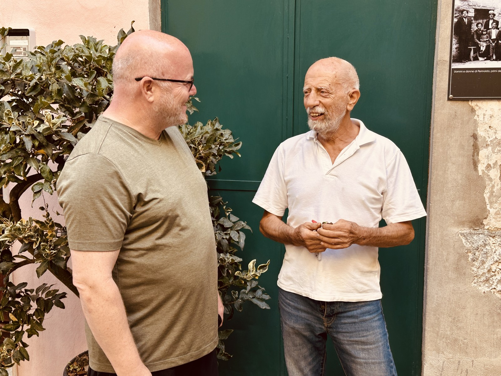

„Vorsicht!“ Die ältere Frau ruft es gerade noch rechtzeitig. Ein kleiner Fiat biegt um die Hausecke und schiebt sich durch eine Gasse, in der man zwei ausgestreckten Armen kaum Platz zutrauen würde. Der Fahrer kennt jeden Zentimeter. Er ist Handwerker, hat etwas zu erledigen und keine Zeit, das Postkartenmotiv zu bestaunen, durch das er gerade fährt.
Perinaldo liegt auf einem Höhenrücken im Hinterland der italienischen Riviera, 572 Meter über dem Meer. Seine Häuser stehen dicht beieinander, Mauern erzählen von Jahrhunderten, Treppen führen hinauf und hinunter. Nach Süden öffnen sich die Hänge in Richtung Mittelmeer: Olivenbäume, Terrassen, Kastanien und ein Licht, das die Landschaft selbst an gewöhnlichen Tagen außergewöhnlich erscheinen lässt.
Es ist September. Die Sonne wärmt die Luft. Hier möchte man sitzen, einen Espresso trinken und glauben, das Leben sei in Ordnung. Für einen Gast ist das leicht. Nach drei Tagen Gesprächen weiß ich: Für diejenigen, die bleiben, ist Schönheit kein Ersatz für Einkommen, einen Arzt oder eine Schule. Manchmal ist sie nur die schönste Kulisse für einen mühsamen Alltag.
Die jungen Leute sehen das Meer – und die Entfernung
Unter Kastanienbäumen fegt Mattia Milone das erste Laub zusammen. Der junge Landschaftsgärtner arbeitet eigentlich in Sanremo und springt heute bei der Dorfreinigung für einen kranken Kollegen ein. Neben ihm steht Giorgia Olivero, seine Freundin. Sie studiert Krankenpflege in Como und verbringt freie Tage bei Mattia. Die beiden reden und lachen; dazwischen geht der Besen über das Pflaster. Ein unaufgeregtes Bild von Nähe.
Wir sprechen über Arbeit und Zukunft zwischen den Bergen und der Küste. „In Deutschland kann man mehr Geld verdienen und die Arbeitsplätze sind sicher“, sagt Mattia. Und: „Ich habe einen guten Job, aber das Leben ist teuer geworden und der Lohn ist fast gleich geblieben.“ Das ist kein Auswanderungsplan. Mattia möchte seine Heimat nicht verlassen. Aber er kennt viele, die darüber nachdenken. Wer jung ist, fragt nicht zuerst nach dem schönen Licht auf den Hügeln. Er fragt, was am Monatsende übrig bleibt.
Deutschland erscheint den beiden wie ein Versprechen. Als ich von steigenden Mieten und wirtschaftlichen Problemen erzähle, schauen sie überrascht. Auch Giorgias Vorstellung vom deutschen Gesundheitswesen erweist sich als lückenhaft. Wir bezahlen mit der gleichen Währung und reisen ohne große Grenzhürden. Dennoch wissen wir erstaunlich wenig vom Alltag der Nachbarn. Nähe ist noch keine Vertrautheit.
Mattia kennt die Kehrseite des Tourismus. Über Sanremo sagt er: „Ja, es ist eine Stadt. Aber die Bevölkerung teilt sich auf.“ Da seien die Einheimischen, die auch im Winter dort leben, und jene, die für Sonne und Strand kommen. Die Besucher bringen Geld. Sie treiben nach Mattias Beobachtung aber auch Mieten und Immobilienpreise in die Höhe. An der Küste wird das Wohnen teurer; oben in den Dörfern das Bleiben schwieriger. Das Paradies hat mehrere Rechnungen.
Auf die Zukunft der Bergdörfer angesprochen, sagt Mattia: „In den Bergdörfern leben vor allem ältere Menschen – und die Touristen, die für ein paar Tage die Ruhe und Abgeschiedenheit in einer schönen Landschaft suchen.“ Darin liegt die Spannung dieses Landstrichs. Die einen kommen wegen der Stille. Die anderen müssen mit ihr leben.

Ein Dorf ist mehr als seine Vergangenheit
Ein paar Gassen weiter sitze ich mit älteren Einwohnern zusammen. Maria-Clara Biamonti, eine Lehrerin im Ruhestand, ist hier geboren. Sie kennt die vertrauten Wege und die Veränderungen, die sich über Jahrzehnte eingeschlichen haben. Ruhig spricht sie von den unscheinbaren Dingen, die dem Dorf Alltag ermöglichen: Apotheke, Ärztin, die an mehreren Tagen Sprechstunde hält, Busverbindung, Kindergarten und Schule.
Was für eine kleine Aufzählung. Und was für eine große Bedeutung. In einer Großstadt ist die Apotheke eine Adresse im Telefon. Hier bedeutet sie Selbstständigkeit. Der Bus ist nicht bloß eine Linie auf dem Fahrplan, sondern die Verbindung zu Schule, Einkauf und Freunden. Wenn eine solche Einrichtung verschwindet, wird nicht nur das Leben unbequemer. Es schrumpft der Raum, in dem Menschen ohne Hilfe zurechtkommen.
Maria-Clara erzählt vom Zusammenhalt. Man kennt sich, bleibt vor Häusern stehen, fragt nach. Ein Dorf lebt, weil Menschen einander wahrnehmen – nicht nur, weil historische Fassaden erhalten werden. Zugleich darf man Gemeinschaft nicht zu gefällig sehen: Wer einander seit Jahrzehnten kennt, lässt Fremde nicht unbedingt sofort hinein. Perinaldo ist kein Theaterstück, in dem jeder Besucher sogleich zum Freund wird.
Der Bürgermeister kommt hinzu, wie das in kleinen Orten geschieht: nicht aus einem Sitzungssaal, sondern aus einer Seitengasse. Francesco Guglielmi führt sein Amt in Teilzeit aus und bewirtschaftet mit seiner Tochter einen Hof. Was wünsche er sich für Perinaldo? „Es ist wichtig, dass wir die Apotheke, die Schule und die kleinen Einzelhändler am Ort behalten können. Damit ist eine gewisse Grundversorgung gegeben.“
Keine Vision von einem neuen Wahrzeichen, keine große Verheißung. Nur die Bitte, das Vorhandene nicht zu verlieren. Guglielmi weiß, dass eine Gemeinde nicht von schönen Dächern allein lebt. Kinder brauchen eine Schule, ältere Menschen medizinische Hilfe, alle ein Geschäft, in dem man einkaufen kann. Wer hier morgens die Ladentür aufschließt, hält mehr am Leben als ein Geschäft.
Was seinen Ort auszeichne? „Sehenswert. Harmonisch. Beeindruckend“, antwortet er. So spricht ein Mann, der seine Heimat mag. Ich frage mich, wie oft er darum kämpfen muss, dass das Selbstverständliche bleibt. Gegen den Verlust gibt es keine Siegesfeier. Höchstens am nächsten Morgen wieder Brot zu kaufen.


Von Rosen, die anderswo wachsen
Der alte Landwirt, der bei unserem Gespräch sitzt, hat auf den Hängen außerhalb des Dorfes gearbeitet. Er erzählt von Rosen, Gemüse, Oliven und violetten Artischocken, die hier zur Gegend gehören wie die Kastanien. Die Sonne gab den Arbeitstag vor; das Wetter war keine Ausrede, sondern Teil des Berufs. Man hört einem Menschen zu, der mit dem Boden gelebt hat.
Früher ließ sich mit Blumen Geld verdienen. Dann wurden die Bedingungen ungünstiger, die Konkurrenz stärker, die Absatzwege internationaler. Rosen, erzählt er, kämen heute aus afrikanischen Ländern. An den Hängen stehen noch Gewächshäuser, deren beste Zeit vorbei ist: Glas und Gestänge dort, wo einmal eine Zukunft aus Setzlingen und Ernten wachsen sollte.
Es wäre bequem, von einer heilen Welt zu erzählen, die der Welthandel zerstört habe. Doch die terrassierten Hänge zeigen, wie viel Mühe schon die alte Welt verlangte. Alles musste gepflegt, bewässert, geerntet werden. Die Arbeit war hart und das Einkommen nie selbstverständlich. Zugleich kann der Markt erbarmungslos deutlich machen, dass andere dieselbe Rose günstiger hervorbringen. Was für Käufer eine preiswerte Blume ist, kann für eine Familie den Verlust ihres Geschäfts bedeuten.
Ähnlich erging es den Kastanien. Über Generationen ernährten sie Menschen und Tiere, lieferten Holz und Einkommen. Pflanzenkrankheiten und aufgegebene Anbauflächen veränderten nach dem Zweiten Weltkrieg die Landschaft. Heute erinnern Feste an die Kastanie, die einmal Lebensgrundlage war. Tradition bewahrt Erinnerung. Sie zahlt aber keine Rechnung für den nächsten Winter.
Und dann wachsen hier diese eigensinnigen violetten Artischocken, eine regionale Besonderheit, die auf den Hängen ihren Platz gefunden hat. Vielleicht steckt in solch einer Pflanze mehr Hoffnung als in manchem Zukunftsprogramm: etwas Eigenes, das Menschen kennen und weitergeben. Doch auch die besondere Artischocke braucht jemanden, der sie anbaut – und jemanden, der sie kauft.
Was ein Restaurant über Heimat erzählt
Angelo G. Meloni hat ein bewegtes Leben hinter sich, als er nach Perinaldo kommt. Geboren auf Sardinien, arbeitete er als Jugendlicher im Elsass, lernte später Küche, Service und die Kunst des Gastgebens. Er kann von Erfolgen und Enttäuschungen erzählen. Am lebendigsten wird er, wenn es um das Essen und die Menschen an seinen Tischen geht.
Bei einem Besuch von Verwandten entdeckte er Perinaldo und verliebte sich in das Dorf. Seit 2009 betreibt er hier mit seiner Frau Patrizia Corona das Ristorante „I Pianeti di Giove“. Sie führt den Service mit jener Aufmerksamkeit, die kein Lehrbuch ersetzt: Sie sieht den Gast, nicht nur seine Bestellung. Er kocht mit Leidenschaft und einem Schatz an Erfahrungen, den er seit jungen Jahren schriftlich festhält. Sein Ziel: Die Menschen sollen bei ihm glücklich sein.
Die schöne Aussicht ist noch kein funktionierendes Geschäftsmodell. Im Sommer sitzen Gäste aus mehreren europäischen Ländern an den Tischen: Deutsche, Österreicher, Norweger, Italiener. In der Nebensaison wird es ruhiger. Wer hier ein Restaurant führt, muss damit leben, dass ein großer Teil seiner Kundschaft nur zeitweise im Dorf wohnt. Die Begeisterung für Perinaldo kommt in Wellen. Die Kosten bleiben.
Auch menschliche Nähe ist nicht automatisch zu haben. Angelo und Patrizia erzählen, es habe lange gedauert, in die Dorfgemeinschaft hineinzufinden. Man kann als Gast herzlich bewirtet werden und als Zugezogener doch fremd bleiben. Gemeinschaft schenkt Halt; manchmal zieht sie eine unsichtbare Grenze. Das entdeckt man nur, wenn man nicht nach einer Stunde wieder abreist.
Angelo malt inzwischen auch Bilder und würde sich der Kunst gern stärker zuwenden. Doch das Restaurant ist weiterhin sein Leben. Einen bequemen Ruhestand hat er nicht geplant. Eines Tages, wenn es nicht mehr geht, möchte er zurück nach Sardinien. Bis dahin werden Teller angerichtet, Gäste begrüßt, Geschichten erzählt. Vielleicht hält auch diese tägliche Entscheidung, wieder aufzuschließen, das Dorf zusammen.
Die Sterne über den Dächern
Perinaldo ist der Geburtsort von Giovanni Domenico Cassini, der 1625 hier zur Welt kam und später ein bedeutender Astronom wurde. Er beobachtete den Saturn, entdeckte Monde und jene Lücke in seinen Ringen, die heute seinen Namen trägt. Von einem Dorf auf den Höhen Liguriens reichte sein Blick bis ins Sonnensystem. Perinaldo erinnert an sein astronomisches Erbe. Hier oben passen die Nähe zur Erde und die Sehnsucht, darüber hinauszusehen, zusammen.
Der Blick nach oben hilft wenig, wenn unten ein Geschäft schließt. Vielleicht liegt die Größe der Menschen, denen ich begegne, gerade darin. Sie reden nicht, als könnten sie die Geschichte aufhalten. Sie arbeiten, pflegen Gärten, unterrichten, bedienen Gäste, bestellen Hänge und kümmern sich um Nachbarn. Die Vergangenheit dieses Ortes ist gut zu sehen. Seine Zukunft ist schwerer zu erkennen.
Womöglich liegt darin der „Kampf im Nichts“, den ein Fremder zunächst nicht bemerkt. Es gibt keinen Gegner, den man besiegt, keinen Tag, an dem endgültig gewonnen wäre. Nur die schleichende Gefahr, dass wieder jemand fortzieht, ein Laden nicht öffnet, Land verwildert. Der Kampf besteht darin, einen gewöhnlichen Dienstag möglich zu machen: mit Bus, Schule, Restaurant – und einem Grund für junge Menschen, hierzubleiben.
Als ich Perinaldo verlasse, nehme ich natürlich Bilder mit: sonnenwarme Steine, schmale Gassen, das Meer, Kastanienbäume vor blauem Himmel. Stärker bleiben die Gesichter. Mattia, der seine Heimat nicht aufgeben möchte und trotzdem die Rechnungen kennt. Maria-Clara, die in kleinen Einrichtungen das große Ganze erkennt. Francesco Guglielmi, der eine Apotheke sichern will, statt von Glanzprojekten zu träumen. Der alte Landwirt, der weiß, was eine Rose einmal wert war. Angelo und Patrizia, die jeden Tag aufs Neue ein Stück Leben in der Gemeinde behaupten.
Man kann sich in diese Landschaft verlieben. Die Menschen, die dort wohnen, müssen mehr tun: Sie müssen in ihr bestehen. Vielleicht ist das der Unterschied zwischen dem schönen Italien, das wir suchen, und dem wirklichen Italien, das wir allzu selten sehen. Perinaldo verdient nicht nur Bewunderung für seine Schönheit. Es verdient Aufmerksamkeit für diejenigen, die ihr einen Alltag geben.